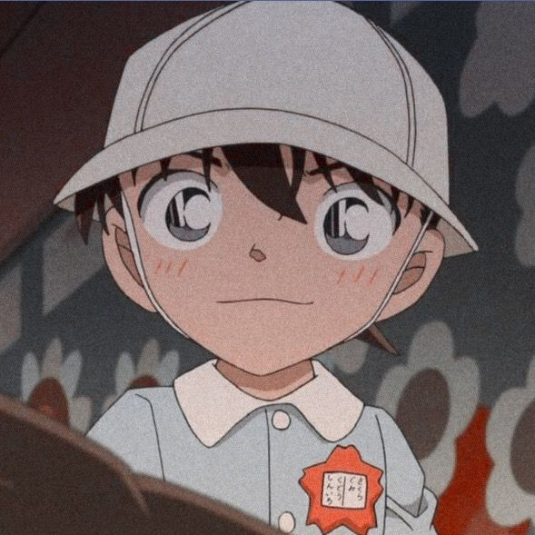

Top 10 animes mais assistidos!
10- Sword Art Online
A história fala de um garoto chamado Kirito que acaba preso em um jogo beeem estilo
futurístico, sabe? Além disso, Kirito é o primeiro a ter acesso a esse jogo lotado de monstros
extremamente perigosos e armas. Ele até tenta escapar, mas acaba percebendo que não conseguirá se não
passar de todos os níveis.
9- Fullmetal Alchemist

O anime conta a história de dois irmãos que vivem tentando trazer sua mãe de volta a vida.
Mas, de acordo com a história, para que isso aconteça eles deverão sacrificar algo do mesmo valor.
Apesar disso tudo, os dois irmãos acabam sabendo da existência de uma Pedra Filosofal, que pode
trazer sua mãe de volta sem um sacrifício. Portanto, isso acaba levando-os a uma batalha mais
assustadora do que pensavam.
8- Sailor Moon
Sailor Moon é um anime que gira envolta de uma adolescente comum
que tem sus vida bagunçada após descobrir que está destinada a ser a 'protetora planetária' e tem o dever
de proteger o mundo e a todos. E então, a guerreira Sailor Moon forma alianças com outros soldados para
ajudá-la a proteger a Terra.
Apesar da aparencia infantil, Sailor Moon engloba vários assuntos sérios, como problemas de relacionamentos e
sexualidade.
7- Attack on Titan


A série de mangá e anime Attack on Titan se trata de um mundo onde
a humanidade vive dentro de cidades que são cercadas com a finalidade de proteção. Isso se deve ao fato
de, no mundo retratado, existir seres enormes que se alimentam por humanos chamados Titãns.
Além disso, a história também fala de Eren Yeager e seus dois aliados que vivem apeenas para matar
os titãns.
6- Detective Conan

A história gira em torno de Shinichi Kudou, que tem apens 17 anos e é capaz de resolver
qualquer caso. Mas, em uma certa noite de investigação, o garoto acaba sendo drogado por
dois homens suspeitos e tem seu corpo encolhido pra o tamanho de uma criança de 7 anos.
Por isso, ele acaba escondendo sua identidade enquanto estuda o que aconteceu com o seu corpo.
5- Death Note
Light Yagami, um estudante do ensino médio que se depara com um 'Death Note'.
Este caderno especial é foi jogado no mundo humano por um deus da morte e,
caso Light queira matar alguém, ele só precisa escrever o nome deste alguém no caderno.
Depois de descobrir esse poder em suas mãos, Light decide tornar o mundo um lugar melhor, extinguindo o máximo de criminosos que puder.
No entanto, a polícia descobre os assassinatos incomuns e quer pegar o culpado com a ajuda de um jovem detetive.
4- Naruto
O anime naruto conta a história de um menino que vive um um monstro selado dentro dele, a Kyuubi.
Por isso, Naruto foi muito excluído e julgado durante toda a sua infancia e juventude. Mas, o garotinho
loirinho nunca desiste e luta incansavelmente para alcançar seu objetivo de se tornar Hokage e ser reconhecido
por todos na sua vida.
Dattebayo!
3- Pokémon
O anime gira em torno de Satoshi, um garotinho de 10 anos que sonha em ser um treinador
Pokémon. Quando seu sonho está prestes a se tornar realidade, ele descobre que todos os pokémons que estavam disponíveis foram pegos
e só sobrou um pokémon chamado Pikachu. E ai nasce uma bela amizade com a finalidade de se
tornarem os melhores!
2- One Piece
Se trata de um anime onde um adolescente, Monkey D. Luffy, forma sua própria tribulação e enfrenta
vários inimigos e passa por diversas aventuras para chegar a um tesouro, chamado One Piece que, segundo
o Rei dos Piratas, trará inúmeras riquezas a quem o encontrar.
1- Dragon Ball
A série conta a história de Son Goku, que desde sua infância até a idade adulta passa por muitas aventuras
enquanto ele treina artes marciais e explora o mundo em busca de sete esferas conhecidas como
as Esferas do Dragão, que convocam um dragão que concede um desejo quando reunidas.